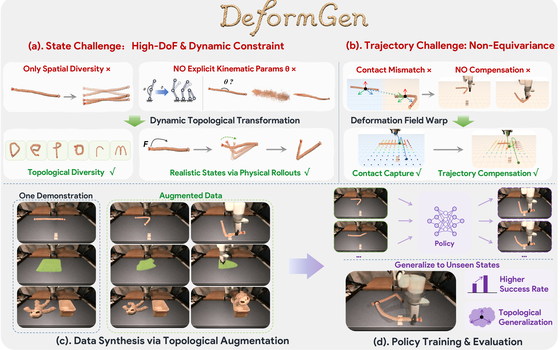
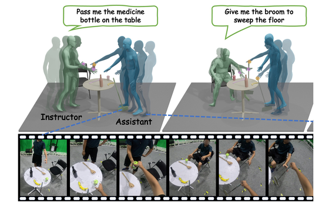
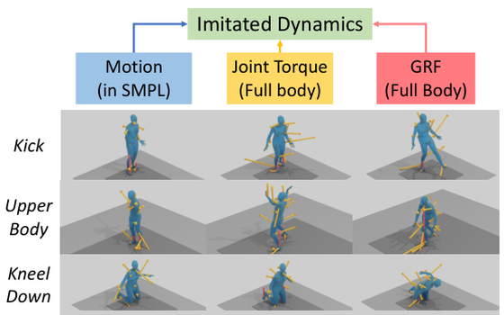

Zili Lin 林自力
I am a Ph.D. student at Shanghai Jiao Tong University and the Eastern Institute of Technology, Ningbo (joint program), advised by Prof. Wenjun Zeng and Prof. Xin Jin. I am also a research intern in the Spatial Intelligence Group at Microsoft Research Asia, mentored by Dr. Jiaolong Yang. Before that, I received my B.S. in Physics from Shanghai Jiao Tong University.
My research interest is robot learning, with the goal of building generalist robots that work reliably in the physical world. Recently, I have been working on physically realistic data generation for deformable manipulation, real-robot post-training of vision-language-action models, and rigorous evaluation of robot policies.
News
Publications



Experience
- Apr 2026 – PresentMicrosoft Research Asia, Spatial Intelligence Group — Research Intern, mentored by Dr. Jiaolong Yang
- Jun 2024 – PresentEastern Institute of Technology, Ningbo — Ph.D. Student (SJTU-EIT joint program), advised by Prof. Wenjun Zeng and Prof. Xin Jin
- Dec 2023 – Jun 2024MVIG-RHOS Lab, Shanghai Jiao Tong University — Research Intern, advised by Prof. Yong-Lu Li and Prof. Cewu Lu
Service
- Volunteer, 1st China Embodied AI Conference (CEAI 2024)